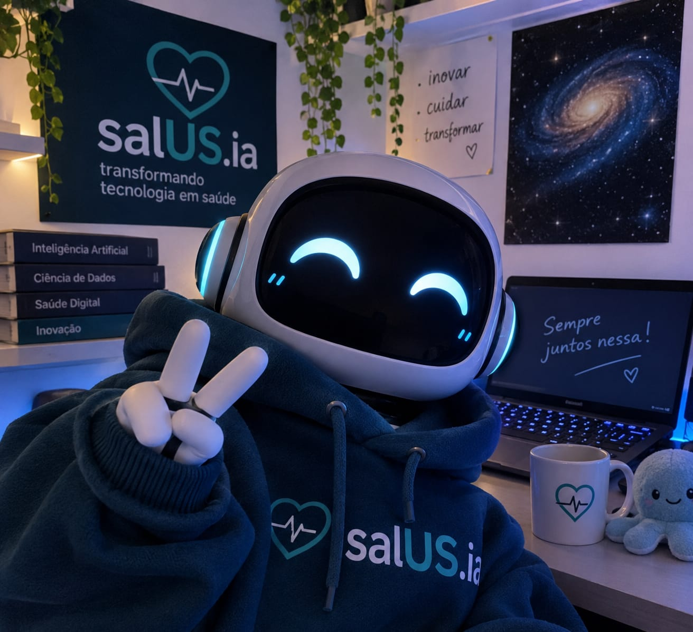

Pitch Deck 2026
Copiloto de triagem para urgência e emergência
Triagem segura,com o olhar humano no centro.
Um guia que ajuda o profissional a não errar: o que perguntar, em que ordem, e o que observar. A decisão é sempre dele.

Eu ajudo a lembrar. Quem cuida é você.
AKCIT Camp 2026Universidade Federal de Viçosa · Campus Rio Paranaíba